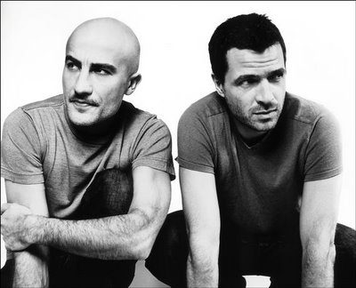

Sharam [Audio]: Wilder than ever


STREAMING AUDIO INTERVIEW
Deep Dish might be yesterday’s news, and techno prince Dubfire might have got the lion’s share of the attention after the group went their separate ways a few years ago – but to write off an elite talent like Sharam would be more than a little silly. If you’ve seen him perform as a solo DJ over the past few years then you’ll know what a polished talent he is, effortlessly holding the attention of whatever dancefloor he’s peering down upon, and as a solo producer he’s delivered a solid stream of house and progressive hits – most of which have been collected on his expansive Get Wild double album that reached the public this year.
“It’s always been a double CD, with a total of 22 tracks, and the idea was to do an album, but in a compilation format and to tell two mini stories under one roof,” he told ITM. “It’s actually out in the US, and was released in the European territories after that, and now it’s coming out in Australia. It’s been like reliving a dream over and over again, like that movie Groundhog Day. I keep going through that every couple of months,” he laughed.
It’s been nearly three years since Sharam toured Australia, but if you’ve forgotten just how good he is behind the decks then you’ll have a chance to be reminded when he hits the mainstage on the Summadayze tour. ITM’s Angus Paterson finds out what we’ve got to look forward to.
Sharam’s Get Wild is out now in Australia through Stomp, and you can catch him on tour across the country with Summadayze:
Thur 31st Dec – Summanights, Sydney
Fri 1st Jan – Summadayze, Melbourne
Fri 1st Jan – Summadayze, Adelaide
Sun 3rd Jan – Summadayze, Perth
Sat 9th Jan – Summafieldayze, Gold Coast